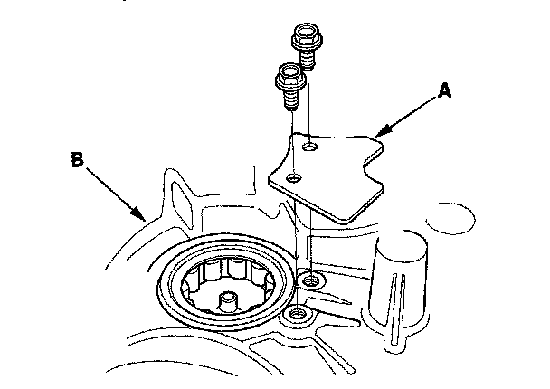
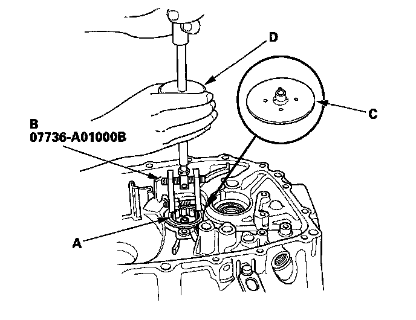
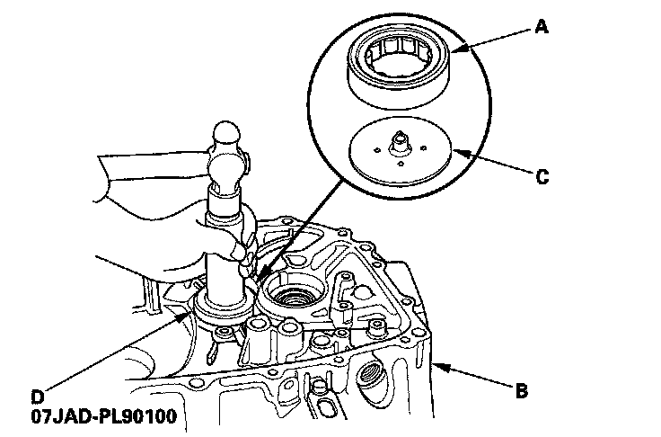
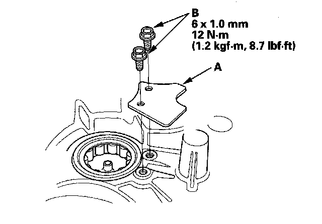

Countershaft Bearing Replacement
Countershaft Bearing ReplacementSpecial Tools Required
^ Oil seal driver 07JAD-PL90100
^ Adjustable bearing puller, 20 - 40 mm 07736-A01000B
^ Slide hammer, 3/8"-16 UNF commercially available.
1. Remove the bearing set plate (A) from the clutch housing (B).

2. Remove the needle bearing (A) using the 20 - 40 mm adjustable bearing puller (B) and a commercially available 3/8"-16 UNF slide hammer (D), then remove oil guide plate C.

3. Position oil guide plate C and new needle bearing (A) in the bore of the clutch housing (B).

4. Install the needle bearing using the oil seal driver (D).
5. Install the bearing set plate (A) with the bolts (B).
